目录视图
目录视图 摘要视图
摘要视图 订阅
订阅版权声明：本文为博主原创文章，未经博主允许不得转载。
转载请注明出处：【huachao1001的专栏：http://blog.csdn.net/huachao1001/article/details/53906237】
JNI（Java Native Interface），出于学习JNI的目的，为了能够更方便快速地运行程序。本文的是在IDEA中进行，而不在AndroidStudio，这样能够对NDK的工作过程有个更深刻的认识，同时也能对JNI的原理有更深的理解。虽然本文是HelloWorld篇，但是其中涉及到很多内容。博主将遇到的坑都记录下来了，希望能够帮到大家。这篇文章可能是2016年的最后一篇文章了，接下来JNI相关系列文章明年推出，欢迎大家关注。
1. 搭建GCC编译环境
既然使用的了JNI，那就不可避免地需要将C/C++文件编译成dll（windows）或so（Linux）文件。因为我是在Windows平台下开发，可以有如下选择：
- 使用VC（或VS）编译成dll
- 使用GCC编译成dll
因为开发Android应用肯定是需要编译成Linux平台的so文件，因此，为了后面开发Android程序的兼容，使用GCC编译器比较好。而Windows平台下的GCC又可以有如下选择：
- 使用
MinGW- 使用
Cygwin
这里我选择了MinGW，不管选择哪个，只要能让本地有GCC编译环境即可。
注意：搭建GCC编译环境时，一定要选择正确的GCC编译版本（32位和64位）。如果你本地安装的JDK是64位的，那么选择64位GCC，否则选择32位。这是为了使得编译后的库文件跟JVM的位一致，否则后面JVM无法调用dll（或so）。
1.1 安装MinGW
安装MinGW的方法很多，可以前往https://sourceforge.net/projects/mingw/files/MinGW/Base/gcc/ 中自己选择需要的包。老实说，我也不是很清楚哪些包需要下载，没花时间研究，感兴趣的自己研究一些各个包的功能。不过这里有个安装教程https://github.com/cpluspluscom/ChessPlusPlus/wiki/MinGW-Build-Tutorial按照这里的方法安装就可以。
另外，针对64位的，这里https://nuwen.net/mingw.html提供了完整的压缩包，直接下载https://nuwen.net/files/mingw/mingw-14.1.exe运行。如下：
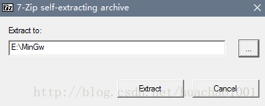
其本质也是解压缩，把需要的MinGW库和程序解压到指定目录。如果懒的去看英文，我这里将我解压后的重新压缩了下，大家去下载并且解压即可直接使用。
链接: https://pan.baidu.com/s/1slpQrrJ
密码: fykw
解压完成后，刚才指定的解压目录中的bin加入到path环境变量中。例如上面图中解压到E:\MinGw，那么应当将E:\MinGw\bin加入到环境变量path中。注意，请确保bin目录确实在E:\MinGw中，如果不在，可能在更深一层目录中，自行确定bin的目录。
做完后，打开控制台，输入：gcc -v，如下：
C:\Users\NetLab\Desktop>gcc -v
Using built-in specs.
COLLECT_GCC=gcc
COLLECT_LTO_WRAPPER=e:/mingw/bin/../libexec/gcc/x86_64-w64-mingw32/6.3.0/lto-wrapper.exe
Target: x86_64-w64-mingw32
Configured with: ../src/configure --enable-languages=c,c++ --build=x86_64-w64-mingw32 --host=x86_64-w64-mingw32 --target=x86_64-w64-mingw32 --disable-multilib --prefix=/c/temp/gcc/dest --with-sysroot=/c/temp/gcc/dest --disable-libstdcxx-pch --disable-nls --disable-shared --disable-win32-registry --enable-checking=release --with-tune=haswell
Thread model: win32
gcc version 6.3.0 (GCC)- 1
- 2
- 3
- 4
- 5
- 6
- 7
- 8
2. 开始编码
2.1 编写Java文件
新建一个Java Project，创建包com.huachao.java，如下：
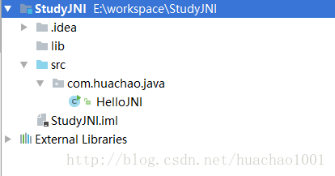
在包com.huachao.java下编写HelloJNI类：
package com.huachao.java;
/**
* Created by HuaChao on 2016/12/29.
*/
public class HelloJNI {
static {
// hello.dll (Windows) or libhello.so (Unixes)
System.loadLibrary("hello");
}
private native void sayHello();
public static void main(String[] args) {
new HelloJNI().sayHello(); // invoke the native method
}
}- 1
- 2
- 3
- 4
- 5
- 6
- 7
- 8
- 9
- 10
- 11
- 12
- 13
- 14
- 15
- 16
- 17
- 18
- 19
函数System.loadLibrary()是加载dll（windows）或so（Linux）库，只需名称即可，无需加入文件名后缀（.dll或.so）。native关键字将函数sayHello()声明为本地函数，由C/C++实现。具体的实现就在hello.dll（Windows平台）或hello.so（Linux平台）中
2.2 生成JNI头文件
2.2.1 手动输入javah指令
JNI生成头文件是通过JDK中提供的javah来完成，javah在 {JDKHome}/bin目录中。用法如下：
javah -jni -classpath (搜寻类目录) -d (输出目录) (类名)- 1
例如，将E:\Porject\out\com\huachao\java目录中的HelloJNI.class生成头文件，并放入到E:\Project\jni中：
javah -jni -classpath E:\Porject\out\com\huachao\java -d E:\Project\jni com.huachao.java.HelloJNI.java- 1
需要注意的是，使用javah来生成头文件（.h）时，-classpath指定的是编译后的java文件（.class）的目录，而不是源文件（.java）的目录，因此在使用javah指令之前，先build一下项目（或直接运行一下）。此时会生称out目录，所有编译后的文件都会存放在这个目录中。
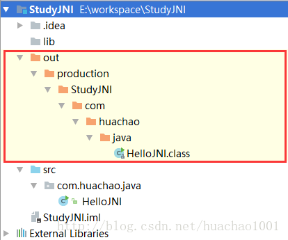
接下来，直接在IDEA的Terminal窗口运行javah：
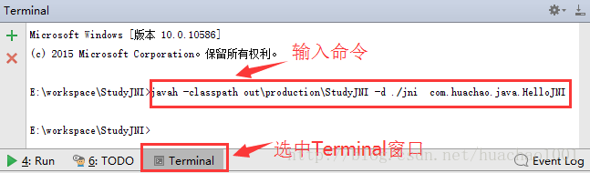
此时在jni目录中生成了头文件com_huachao_java_HelloJNI.h
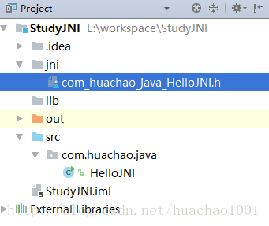
内容如下：
/* DO NOT EDIT THIS FILE - it is machine generated */
#include <jni.h>
/* Header for class com_huachao_java_HelloJNI */
#ifndef _Included_com_huachao_java_HelloJNI
#define _Included_com_huachao_java_HelloJNI
#ifdef __cplusplus
extern "C" {
#endif
/*
* Class: com_huachao_java_HelloJNI
* Method: sayHello
* Signature: ()V
*/
JNIEXPORT void JNICALL Java_com_huachao_java_HelloJNI_sayHello
(JNIEnv *, jobject);
#ifdef __cplusplus
}
#endif
#endif- 1
- 2
- 3
- 4
- 5
- 6
- 7
- 8
- 9
- 10
- 11
- 12
- 13
- 14
- 15
- 16
- 17
- 18
- 19
- 20
- 21
接下来我们只需实现Java_com_huachao_java_HelloJNI_sayHello(JNIEnv *, jobject)即可。仔细观察就会发现这个函数名称是有规律的，即Java_<包>_<类名>_<函数名>，JNIEXPORT和JNICALL这两个宏定义暂时不用管。JNIEnv 和jobject后面系列文章会详细介绍，这里暂时不理会。
2.2.2 一键生成头文件
在2.2.1小节中，介绍了输入javah生成头文件方法。但是如果目录层次很深，或者是有多个需要生成头文件的class文件，这工作量太大了，当然你可以通过写个小程序来实现。但是这里有个更便捷的方法。点击File>Settings>Tools>External Tools：
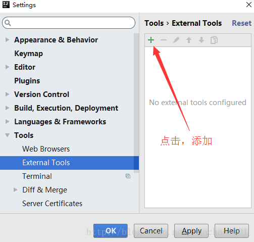
添加一个先的External Tools:
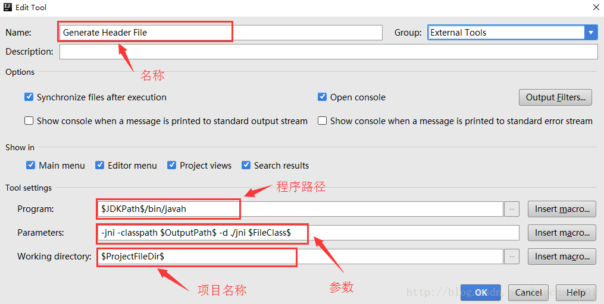
在HelloJNI.java文件中点击右键>External Tools>Generate Header File，
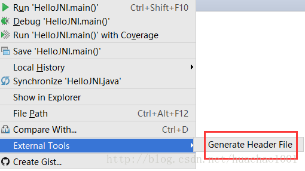
点击生成，可以看到Terminal窗口会自动运行指令。跟2.2.1小节的指令一模一样。
3. 编写C文件并编译成dll（或so）文件
3.1 手动输入命令生成
在jni目录中新建HelloJNI.c文件，如下：
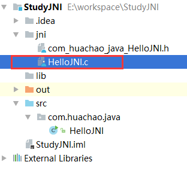
编辑HelloJNI.c如下：
#include<jni.h>
#include <stdio.h>
#include "com_huachao_java_HelloJNI.h"
JNIEXPORT void JNICALL Java_com_huachao_java_HelloJNI_sayHello(JNIEnv *env, jobject thisObj) {
printf("Hello World!\n");
return;
}- 1
- 2
- 3
- 4
- 5
- 6
- 7
- 8
接下来就是使用GCC对HelloJNI.c编译，在Terminal窗口输入如下:
E:\workspace\StudyJNI>gcc -c jni/HelloJNI.c
jni/HelloJNI.c:1:17: fatal error: jni.h: No such file or directory
#include <jni.h>
- 1
- 2
- 3
- 4
发现报错，找不到jni.h头文件，将JDK目录中的include目录加入，即为：
E:\workspace\StudyJNI>gcc -c -I"E:\JDK\include" jni/HelloJNI.c
In file included from jni/HelloJNI.c:1:0:
E:\JDK\include/jni.h:45:20: fatal error: jni_md.h: No such file or directory
compilation terminated.
- 1
- 2
- 3
- 4
- 5
又报找不到jni_md.h错误，继续将JDK目录中的include/win32加入，即：
gcc -c -I"E:\JDK\include" -I"E:\JDK\include\win32" jni/HelloJNI.c- 1
完成编译。此时在项目中会生成HelloJNI.o文件。接下来是将HelloJNI.o转为HelloJNI.dll，即转为windows平台下的动态链接库。在Terminal中输入如下：
gcc -Wl,--add-stdcall-alias -shared -o hello.dll HelloJNI.o- 1
此时项目目录中生成了hello.dll文件:
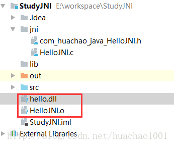
3.2 一键生成dll
有了前面使用External Tools一键生成头文件的经验后，我们可以将编译成dll的过程命令也加入到External Tools中。前面将c文件编译链接成dll文件分了2个命令，这里我们直接通过一个命令来完成：
gcc -Wl,--add-stdcall-alias -I"E:\JDK\include" -I"E:\JDK\include\win32" -shared -o ./lib/hello.dll ./jni/HelloJNI.c- 1
这样就将c文件编译成了dll，在这里把生成的dll文件加入到了lib目录中，而不是像之前那直接放到项目底下。因此在java.library.path应该指定目录为lib。
有了上面的命令后，可以很轻松的加入到External Tools中了。按照前面的方法，点击File>Settings>Tools>External Tools>+，输入内容如下：
name：
Generate DLL
Program：<GCC路径>
Parameters：-Wl,--add-stdcall-alias -I"$JDKPath$\include" -I"$JDKPath$\include\win32" -shared -o ./lib/$FileNameWithoutExtension$.dll ./jni/$FileNameWithoutExtension$.c
Working Directory：$ProjectFileDir$
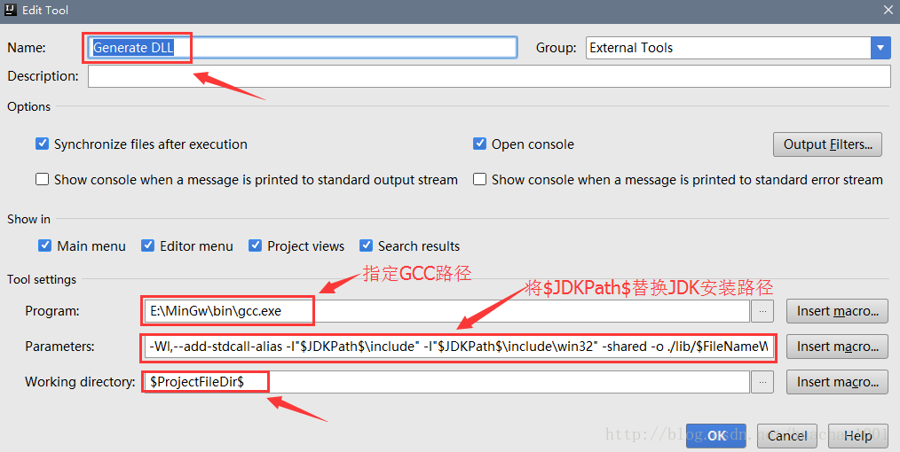
在HelloJNI.c中点击右键，选择External Tools>Generate DLL。此时，在lib目录中会得到dll文件。
4. 运行
运行HelloJNI.java类后，如下：
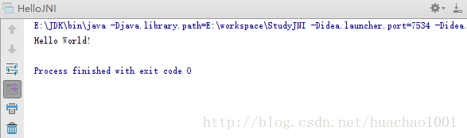
5 可能出现的错误
5.1 java.library.path找不到dll的错误
此时，点击直接运行HelloJNI.java类时，依然还会有错误：
Exception in thread "main" java.lang.UnsatisfiedLinkError: no hello in java.library.path
at java.lang.ClassLoader.loadLibrary(ClassLoader.java:1867)
at java.lang.Runtime.loadLibrary0(Runtime.java:870)
at java.lang.System.loadLibrary(System.java:1122)
at com.huachao.java.HelloJNI.<clinit>(HelloJNI.java:8)
at java.lang.Class.forName0(Native Method)
at java.lang.Class.forName(Class.java:264)
at com.intellij.rt.execution.application.AppMain.main(AppMain.java:123)
Process finished with exit code 1- 1
- 2
- 3
- 4
- 5
- 6
- 7
- 8
- 9
- 10
即找不到我们生成的dll文件。因为在Windows中JVM的java.library.path属性即为环境变量Path指定的目录，而我们生成的dll并未放入到Path指定的任何一个目录中，因此我们需要告诉JVM，dll文件在哪个目录中。点击Run > Edit Configurations...，如下：
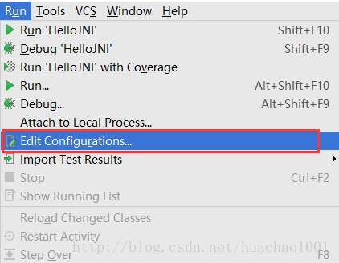
在VM options中加入java.library.path，指定dll（或so）文件所在的目录，比如本文中dll放在项目目录中的lib中，如下：
-Djava.library.path=E:\workspace\StudyJNI\lib- 1
如下图所示：
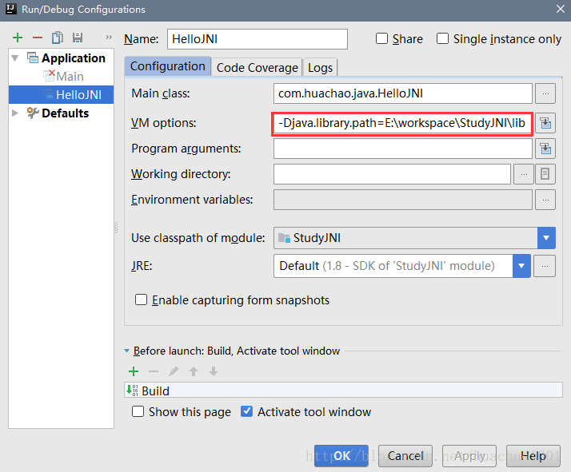
5.2 无法识别__int64类型错误
错误如下：
error: unknown type name '__int64'
typedef __int64 jlong;
^- 1
- 2
- 3
出现这个错误的人一般是使用Cygwin GCC的人，这是因为Cygwin GCC不认识__int64类型，找到<JDK_HOME>/include/win32/jni_md.h，找到typedef __int64 jlong;并修改为：
#ifdef __GNUC__
typedef long long jlong;
#else
typedef __int64 jlong;
#endif- 1
- 2
- 3
- 4
- 5
或者是编译时将__int64加入，如下：
> gcc-3 -D __int64="long long" -mno-cygwin -Wl,--add-stdcall-alias
-I"<JAVA_HOME>\include" -I"<JAVA_HOME>\include\win32" -shared -o hello.dll HelloJNI.c- 1
- 2
5.3 64-bit mode not compiled
错误如下：
HelloJNI.c:1:0: sorry, unimplemented: 64-bit mode not compiled in
#include <jni.h>- 1
- 2
出现这个错误是因为，JDK版本是64位，而GCC编译器编译出的dll（或so）是32位，只需换个64位版本的GCC即可。
参考资料
https://www3.ntu.edu.sg/home/ehchua/programming/java/JavaNativeInterface.html#zz-3.
http://docs.oracle.com/javase/7/docs/technotes/guides/jni/spec/jniTOC.html
- 顶
- 0
- 踩
- 0